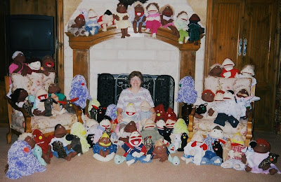

My Puppet Story
2/21/2010
{kind=link}

From Rose BaggerlyI made my first puppet in January 1977 at a college workshop. My first puppet was a hot pink furry monster that I named Herman. He's really dumb and the kids love him because they are smarter than him. He can only count to three since he only has three fingers and the shows I do usually contain an audience of kids that are able to count much higher. By having the kids teach Herman what comes after three, the kids who might otherwise be afraid of puppets relax and they are able to enjoy the show.
I have spent many years since then doing shows, conducting puppet workshops and donating puppets that I've made to churches and orphanages. I've traveled to many places in Texas and Louisiana and in July 2005, I went to Sri Lanka (a country southeast of India) in order to donate 80 puppets to the orphanages after the Tsunami had hit in December 2004. A photo of those puppets and myself is attached. I found out later that one of the girls I sponsor thru a non-profit organization was doing puppet shows for the kids in the orphanage. It was great news and I was overjoyed! She had lost all of her family, so she's had a difficult life. The puppets seem to have given her a new lease on life. I'm really proud of the example she is setting for the kids in her orphanange.
I have spent many years since then doing shows, conducting puppet workshops and donating puppets that I've made to churches and orphanages. I've traveled to many places in Texas and Louisiana and in July 2005, I went to Sri Lanka (a country southeast of India) in order to donate 80 puppets to the orphanages after the Tsunami had hit in December 2004. A photo of those puppets and myself is attached. I found out later that one of the girls I sponsor thru a non-profit organization was doing puppet shows for the kids in the orphanage. It was great news and I was overjoyed! She had lost all of her family, so she's had a difficult life. The puppets seem to have given her a new lease on life. I'm really proud of the example she is setting for the kids in her orphanange.
It's been such an honor to be a puppeteer. Right now I do about fifteen different voices and personalities.
I was viewing a website today and reading about ventriloquism. My adopted son, who is only 5 years old, watched me try ventriloquism, and he decided he wants to practice with me. Thank you for providing the learning tools I need to expand my puppetry work.
I was viewing a website today and reading about ventriloquism. My adopted son, who is only 5 years old, watched me try ventriloquism, and he decided he wants to practice with me. Thank you for providing the learning tools I need to expand my puppetry work.